Shared Spaces
UX Research · Service Design · Augmented Reality
Using augmented reality to create more accessible and engaging art experiences.

Shared Spaces explored how augmented reality could make art more accessible by creating new ways for people to discover, experience, and connect with artwork.
The project was part of a three-year initiative with the University of Saskatchewan Art Galleries & Collections focused on making art appreciation more inclusive and accessible. Working with artists, arts administrators, galleries, and communities across Saskatchewan, we explored the barriers that prevent people from engaging with art and how technology could create new opportunities for connection.
Role
User Engagement Team Member
Company
Shared Spaces
Timeline
September 2019 – June 2020
Team
- Interdisciplinary project involving:
- 6 Faculty Mentors
- 4 Project Managers
- 5 Project Advisory Committee members
- 6 Development Team members
- 5 Development, Outreach & Testing Team members
- 2 3D Modeling Team members
- 5 User Engagement Team member
Focus
UX Research · Service Design · Interaction Design · Augmented Reality · Visual Design · Usability Testing
Tools
Marvel Pop · Augment · Artivive · Adobe Creative Suite
My Contribution
As part of the User Engagement Team, I contributed across research, UX design, testing, AR experiences, and visual development, specifically:
- Conducted competitive research, user interviews, and community consultations.
- Translated research into personas, journey maps, and service blueprints.
- Mapped user flows through sitemaps, storyboards, and interaction concepts.
- Developed sketches, wireframes, and low-fidelity prototypes.
- Conducted usability testing and iterated on designs based on findings.
- Designed AR experiences and explored visual directions for the product.
- Collaborated with the team to address technical challenges and redesign problematic features.
- Helped develop the product’s visual identity.
- Presented the project and AR experiences at the Ten Digit Technology Conference.
Problem
How might we make art appreciation more accessible and engaging for Saskatchewan communities?
The University of Saskatchewan Art Galleries & Collections wanted to explore new ways to connect Saskatchewan residents with art, making art appreciation more inclusive and accessible regardless of location.
The project focused on artists, arts administrators, art enthusiasts, and communities across Saskatchewan, with an emphasis on understanding their different needs, preferences, and relationships with art.
The challenge was to reduce barriers such as time, distance, and cost while creating opportunities for more personal and meaningful connections with art through technology.
Design Process
Research
We used competitive audits, community consultations, interviews, affinity diagramming, and personas to understand the needs of Saskatchewan’s arts communities.
Competitive Audit
We examined existing art, cultural, and digital experiences to identify opportunities for differentiation and improvement. This helped us understand how people currently discover and interact with cultural content and where Shared Spaces could offer something different.
Community Consultations
We worked with local artists, arts organizations, and communities across seven Saskatchewan locations:
- Estevan - Estevan Art Gallery & Museum
- La Ronge - La Ronge Arts Council
- Little Pine First Nation
- North Battleford - Chapel Gallery
- Regina - MacKenzie Art Gallery
- Saskatoon - Remai Modern
- Yorkton - The Godfrey Dean Art Gallery
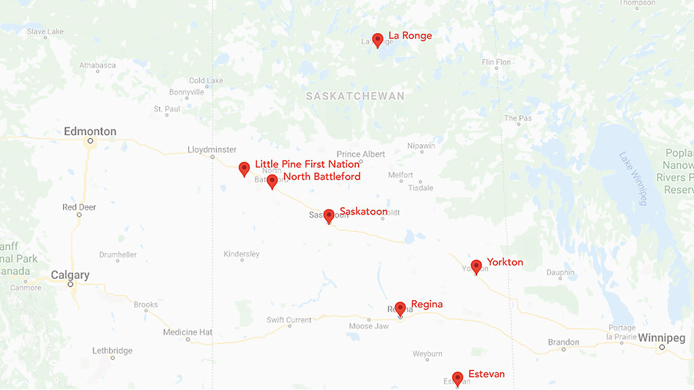
During two-hour workshops, participants completed worksheets independently before discussing their experiences and ideas as a group. We explored positive and negative experiences with art, current obstacles, needs and preferences, potential solutions, and how technology could improve engagement.
One participant described enjoying a museum experience in France with his daughter and valuing the shared experience, but later regretting that they could not continue exploring art together because of their physical separation.
Affinity Diagramming
The team conducted one-on-one interviews with 101 artists and arts administrators across Saskatchewan. We used affinity diagramming to organize the qualitative data and identify recurring themes.
The most common challenges included:
- Time - People often had limited time available to engage with arts experiences.
- Distance - Geographic separation made it difficult for people to access galleries, exhibitions, and cultural events.
- Financial constraints - Travel and participation costs could create additional barriers.
- Connection - Participants valued the personal, social, and emotional relationships that could develop through art.
These findings helped us understand where a digital service could potentially remove barriers and create new opportunities for engagement.
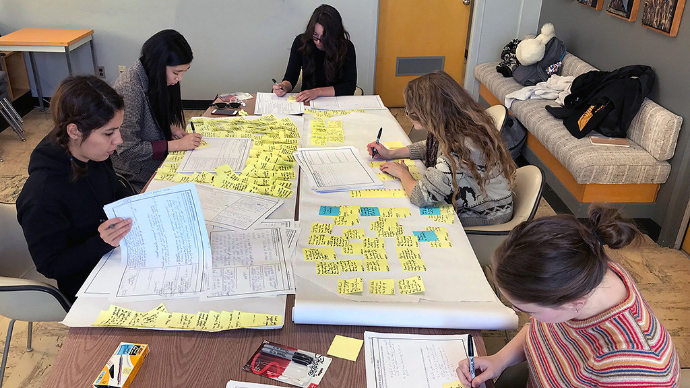
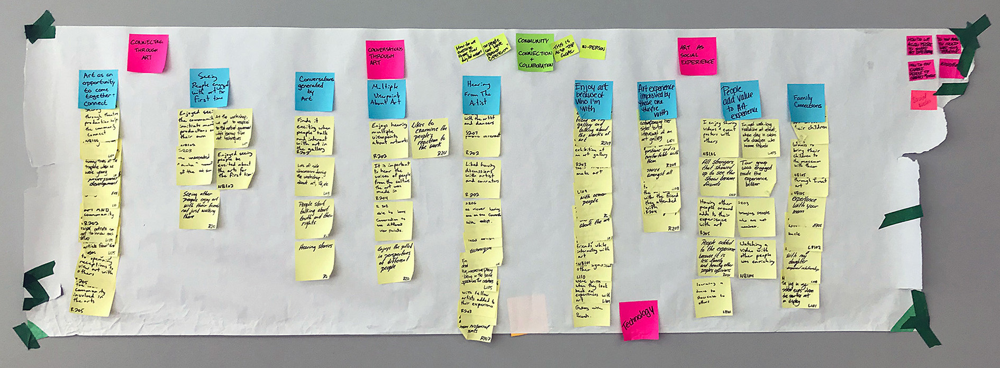
Personas
The research informed five personas representing different user behaviours, needs, and motivations. These helped the team communicate research findings and consider how different people might interact with the Shared Spaces service.
Service Design
The User Engagement Team created service blueprints for the five personas to understand how users might interact with Shared Spaces across different touchpoints.
The blueprints helped us consider:
- User actions
- Touchpoints
- Desired behaviours
- Service functionality
- Supporting interactions
This allowed us to look beyond the interface and consider the complete experience surrounding the product.
Journey Maps & Storyboards
I created a journey map and storyboard for Violet, one of our key personas representing a young emerging artist.
The journey map explored Violet’s emotional state, motivations, and pain points throughout her decision-making process, while the storyboard visualized how she might discover Shared Spaces and move through the service.
These exercises helped identify new pathways, consolidate similar journeys, and highlight opportunities to better support Violet’s goals.
Violet's Storyboard
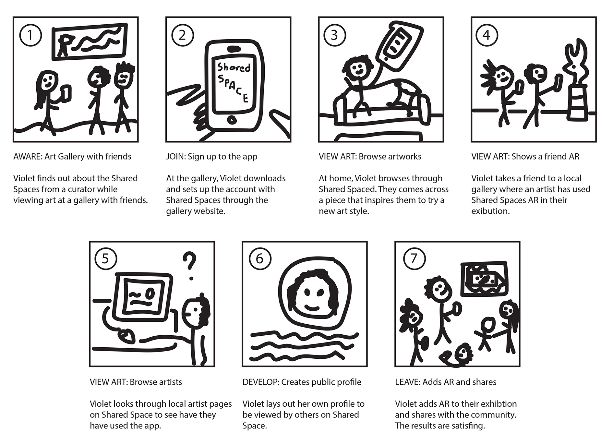
Violet's Journey Map
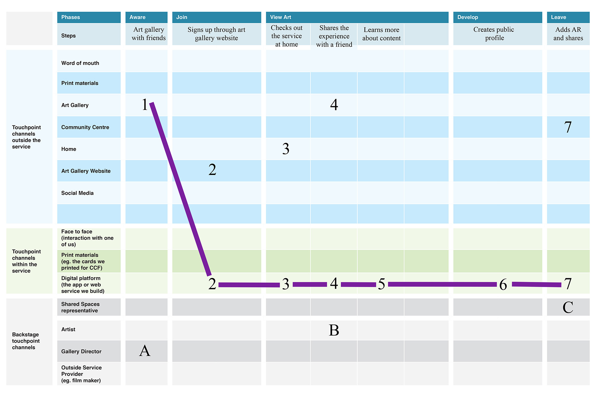
Information Architecture
We developed sitemaps to organize the application’s information architecture and understand how users could move through the experience.
A key goal was to make artwork discovery straightforward while allowing users to move between different types of content.
The structure was designed around:
Discover → Explore → Interact → Learn → Connect
This established the foundation for the application’s navigation and interaction patterns.
Sketching & Concepts
I used rapid sketching to explore different approaches to the application’s main interfaces, focusing on artwork discovery and clear pathways into content.
Sketching allowed us to quickly explore layouts and interaction approaches before moving into more detailed wireframes.
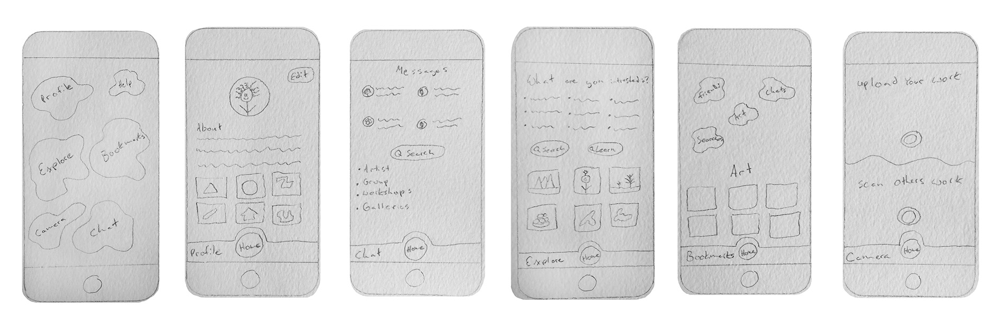
Wireframes
I developed paper and digital wireframes based on the research, personas, and sitemap.
Each team member created wireframes around their assigned persona and anticipated interaction path. After approximately a month of iteration, the strongest ideas were combined into a shared wireframe foundation for the application’s development and interface design.
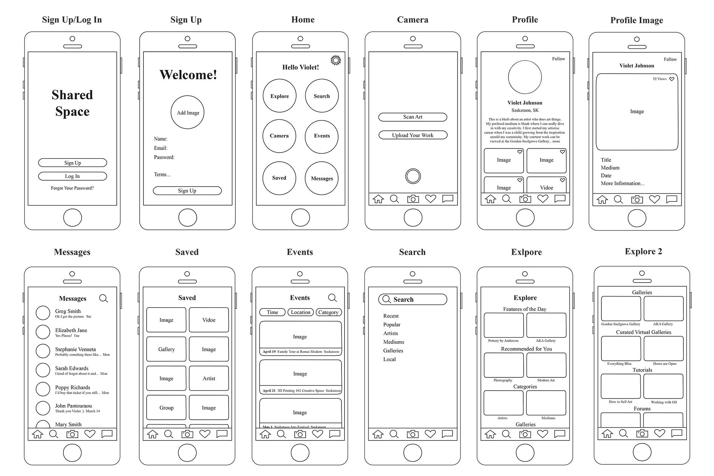
Wireframe With Sitemap
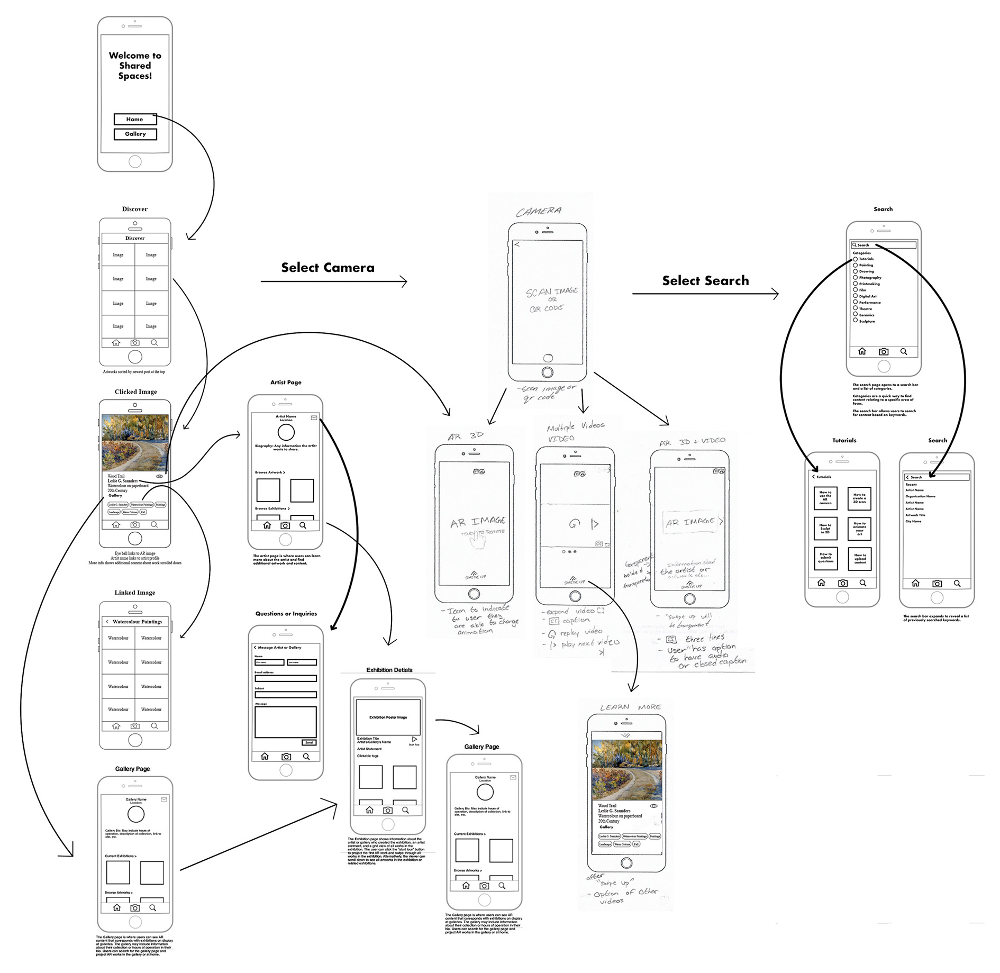
Prototype
We created a functional clickable low-fidelity prototype using Marvel Pop. The prototype allowed us to test the proposed information architecture and navigation before moving into more developed visual designs.
Clickable Prototype
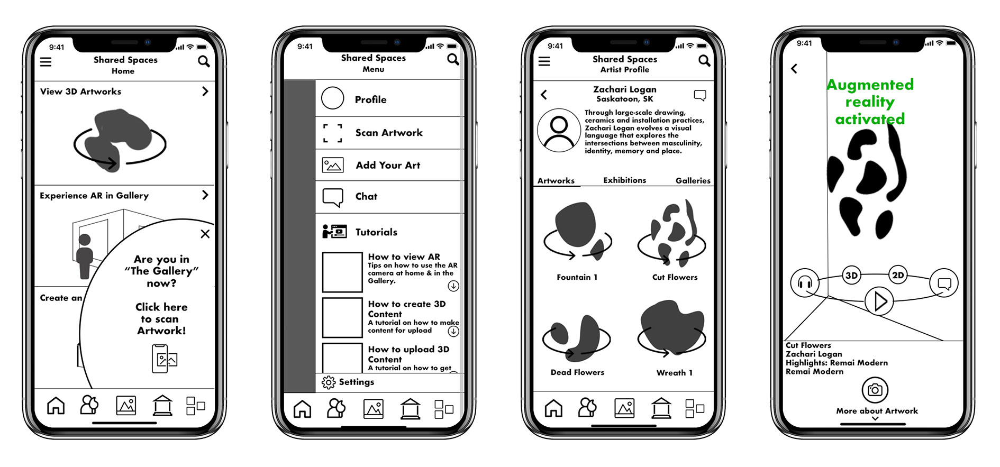
Usability Testing
We tested the clickable prototype to determine whether important pathways were intuitive and easy to navigate.
The team created three core tasks:
- Find Zachari Logan's artwork Cut Flowers.
- Find Ruth Cuthand's Artist in Focus exhibition at Remai Modern.
- Load the audio for Edward Poitras' artwork Cell.
The goal was for each pathway to take approximately one to two minutes.
Findings
Users were generally able to complete the tasks accurately and responded positively to the concept and interface, but testing revealed opportunities for improvement.
Navigation
The navigation menu was confusing for some participants and made certain content difficult to find.
Augmented Reality & 3D Content
Users showed particularly strong interest in 3D content and augmented reality.
Additional Content
Participants expressed interest in artist interviews, educational material, and additional contextual information.
These findings reinforced the importance of AR and 3D experiences within the product direction.
Visual Design
The team developed the visual identity and UI direction for Shared Spaces. We researched existing applications and created mood boards to explore potential visual directions.
We ultimately moved toward a clean, minimal aesthetic with predominantly white and off-white backgrounds. The intention was to keep the interface visually quiet so that artwork remained the focus, similar to the experience of viewing work within a gallery.
Multiple style mockups were developed, reviewed, and refined through team critique.
Version 1
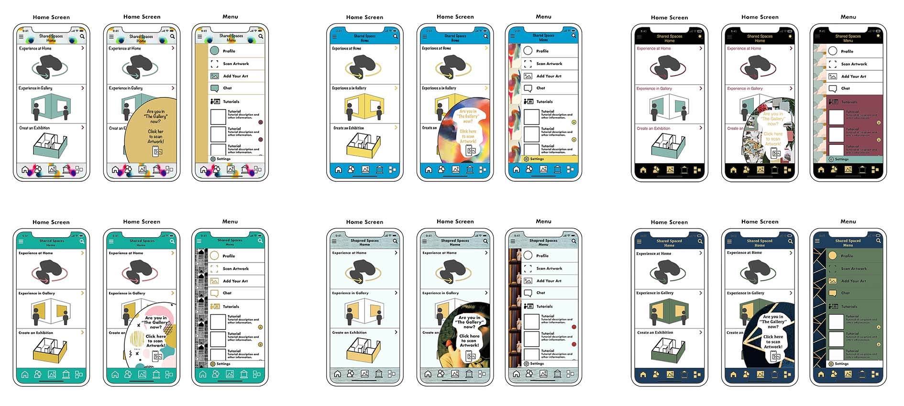
Version 2
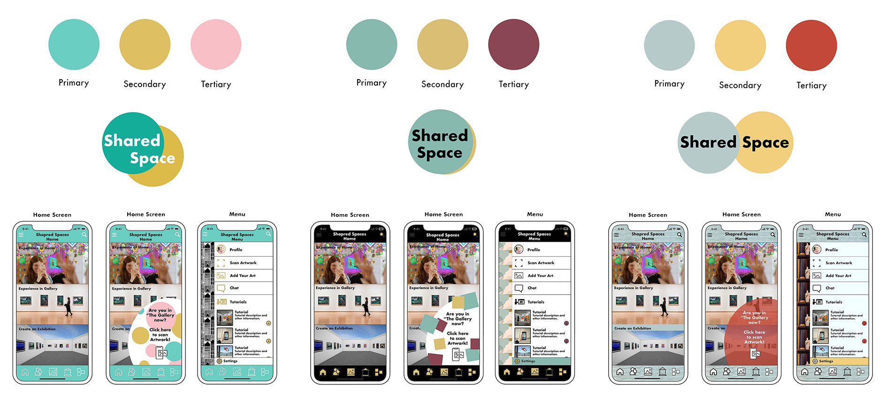
Version 3
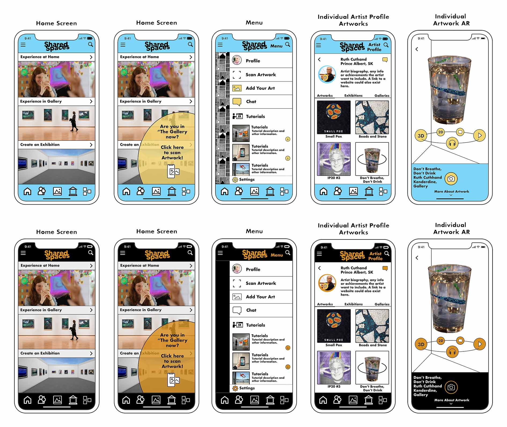
Conference Demonstration
At the Ten Digit Technology Conference, our team presented the Shared Spaces design process and demonstrated how AR could connect physical artwork with digital content. I contributed to presenting two working AR experiences that demonstrated different applications of the technology.
The first experience featured a highly detailed 3D model of a historic wooden canoe created through 3D scanning. Using Augmented Reality, visitors could place and explore the digital canoe within their physical environment.
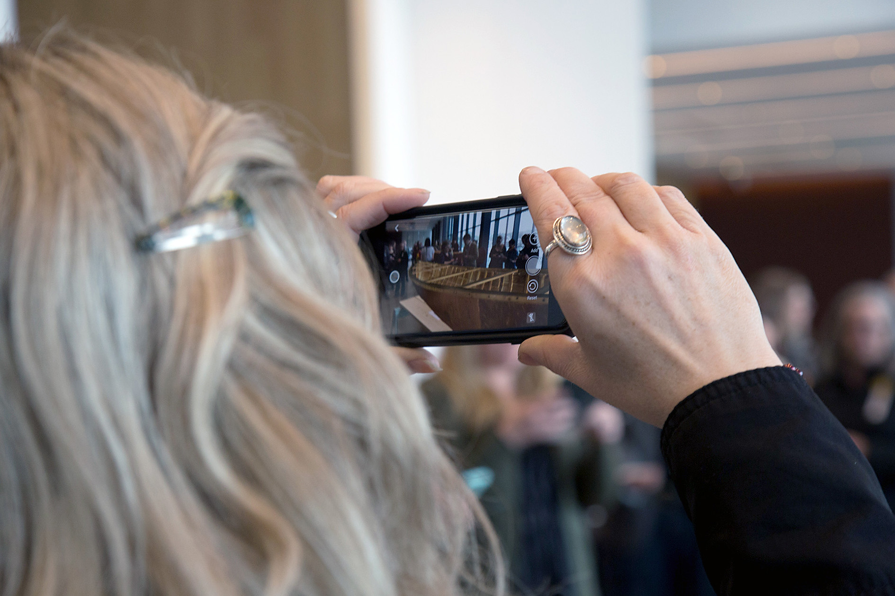
View The 3D Model
Simply scan the QR code below using the Augment app. Once you've scanned the code, point your phone's camera at a flat surface and tap the green square. This will bring up a 3D model of the canoe in 1.5' scale.
The second experience featured artwork by Saskatchewan artist Ruth Cuthand. Printed artworks acted as AR triggers, revealing either an animated interview with Cuthand or a 3D model of her Hepatitis C virus artwork through Artivive.
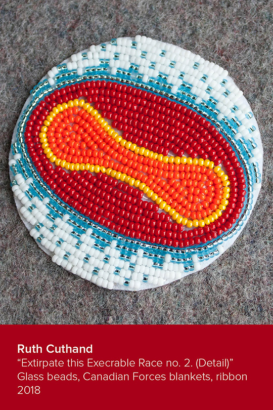
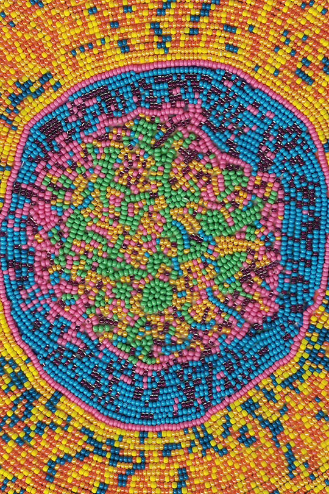
The demonstrations generated positive feedback, increased awareness of the project, and provided opportunities to explore potential applications for AR in future exhibitions and cultural experiences.
Final Design
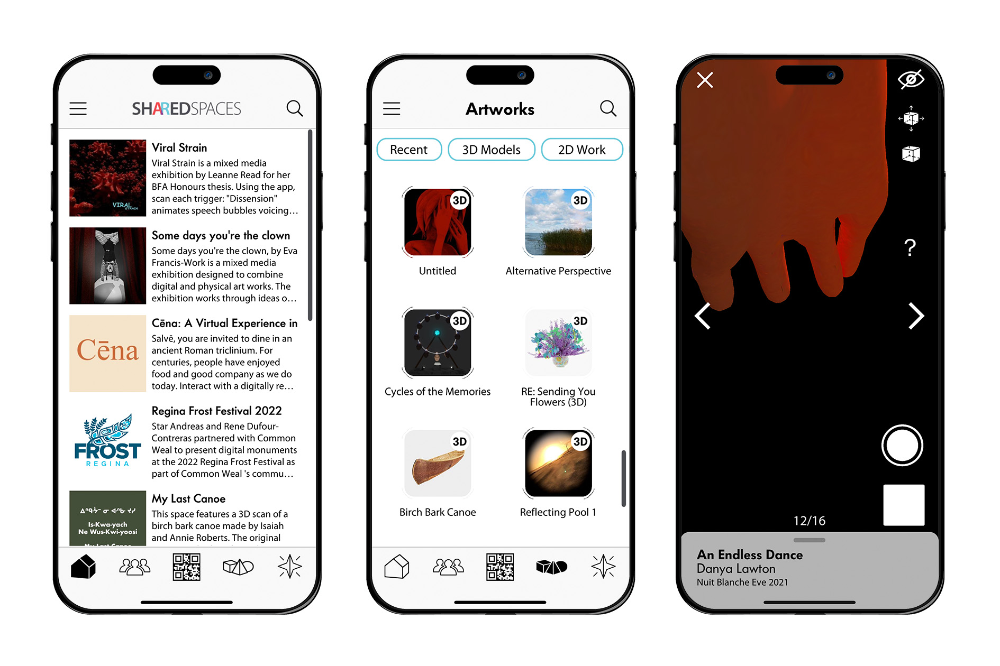
Shared Spaces demonstrated how augmented reality could extend art beyond a physical gallery and connect people with artwork, artists, and cultural content in their own surroundings. The project received positive feedback from users and created opportunities for future collaborations and applications within exhibitions and cultural events.
The final concept brought together art, place, digital content, and augmented reality, allowing users to discover and interact with artwork while accessing artist information, educational content, interviews, and 3D experiences. The app used a clean, minimal interface that kept artwork at the centre while supporting straightforward navigation between related content.
The Shared Spaces application was developed as a working mobile experience and launched at Nuit Blanche Eve 2020, where visitors interacted with AR artwork and installations across the University of Saskatchewan campus. The project was subsequently used by Nuit Blanche Eve and demonstrated potential for use across different exhibitions, artists, and cultural events.
The project showed how AR could extend art beyond the physical gallery, creating new opportunities for discovery, engagement, and connection with artwork and artists. It received positive user feedback and helped open opportunities for future collaborations and applications.
Reflection
Shared Spaces changed how I think about UX because the experience extended far beyond a traditional screen. I learned the importance of grounding design decisions in research and allowing findings from users and communities to shape the direction of a product. The project also strengthened my ability to work through ambiguity, collaborate across an interdisciplinary team, and iterate through critique and usability testing. Most importantly, it showed me that good UX is not only about making an interface easy to use, but about understanding the larger system around an experience and creating something meaningful, accessible, and engaging.
With additional development time, I would continue refining the navigation through usability testing and broader testing across different users and accessibility needs. I would also explore deeper integration of artist interviews, educational content, and 3D experiences, as well as how the AR system could scale across exhibitions, galleries, and cultural events.